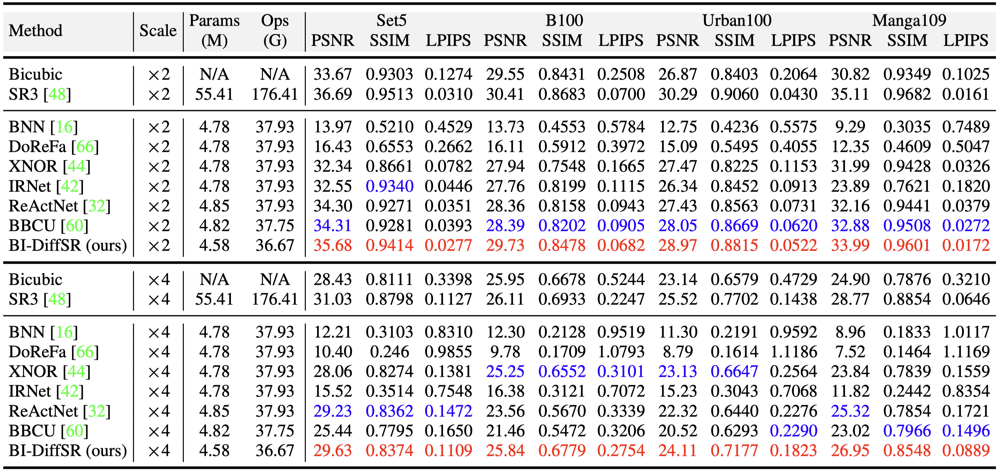
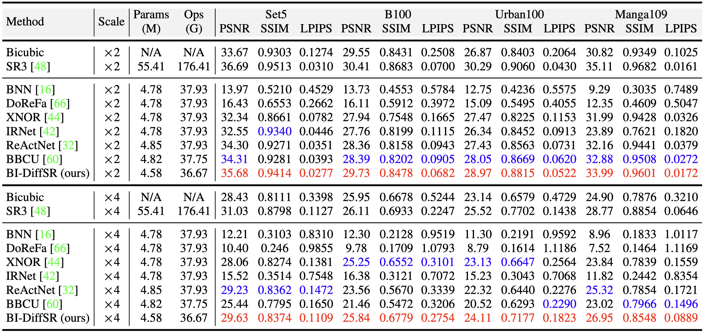

- Results in Table 2 (main paper)

Advanced diffusion models (DMs) perform impressively in image super-resolution (SR), but the high memory and computational costs hinder their deployment. Binarization, an ultra-compression algorithm, offers the potential for effectively accelerating DMs. Nonetheless, due to the model structure and the multi-step iterative attribute of DMs, existing binarization methods result in significant performance degradation. In this paper, we introduce a novel binarized diffusion model, BI-DiffSR, for image SR. First, for the model structure, we design a UNet architecture optimized for binarization. We propose the consistent-pixel-downsample (CP-Down) and consistent-pixel-upsample (CP-Up) to maintain dimension consistent and facilitate the full-precision information transfer. Meanwhile, we design the channel-shuffle-fusion (CS-Fusion) to enhance feature fusion in skip connection. Second, for the activation difference across timestep, we design the timestep-aware redistribution (TaR) and activation function (TaA). The TaR and TaA dynamically adjust the distribution of activations based on different timesteps, improving the flexibility and representation alability of the binarized module. Comprehensive experiments demonstrate that our BI-DiffSR outperforms existing binarization methods.
We propose BI-DiffSR, a novel binarized model for image super-resolution. Our method employs a U-Net architecture optimized for binarization, incorporating consistent-pixel-downsample (CP-Down) and upsample (CP-Up) modules, along with a channel-shuffle-fusion (CS-Fusion) module to enhance information flow. Additionally, we introduce timestep-aware redistribution (TaR) and activation function (TaA) to adjust the activation distributions across timesteps, enhancing the binarized modules.



@inproceedings{chen2024binarized,
title={Binarized Diffusion Model for Image Super-Resolution},
author={Chen, Zheng and Qin, Haotong and Guo, Yong and Su, Xiongfei and Yuan, Xin and Kong, Linghe and Zhang, Yulun},
booktitle={NeurIPS},
year={2024}
}